PHYS232B-Nuclei_&_Particles
- The Nucleus
- Important Terms
- Mass of the Nucleus
- Size of the Nucleus
- Angular Momentum of the Nucleus
- Nuclear Spin
- Nuclear Stability
- Nuclear Force
- Liquid Drop Model
- Nuclear Decays
- Shell Model
- Nuclear Fission and Fusion
- The Standard Model
- Units of particle Physics
- Fundamental Particles
- Generations of Matter
- Anti-particles
- Hadrons
- Fundamental Forces
- Feynman Diagrams
- Interactions
- Particle Decay and Production
- Transformation of Flavours
The Nucleus
The nucleus is composed of protons (\(p\)) and neutrons (\(n\)). Protons and neutrons are collectively called nucleons Main properties of the nucleus:
- \(Z\) - Atomic number (=number of protons)
- \(N\) - Number of neutrons
- \(A\) - Mass number (= number of nucleons)
- By definition: \(A=Z+N\)
- Charge of nucleus: \(Q=Ze\)
Working in the units of kilograms is not convenient, we use atomic mass units \(u\) or \(\text{MeV/c}^2\) instead. \[\begin{align} &1u=1.661\times 10^{-27}\;\text{kg}\\ &1u=931.494\;\text{MeV/c}^2\\ \end{align}\] \(1u\) is defined as 1/12 the mass of a carbon-12 atom.
Important Terms
- Nuclide - An atom with a specific number of neutrons and protons.
- Isotopes have the same \(Z\) but different values of \(N\) and therefore \(A\).
- Isobars have the same value of \(A\) but varying \(N\) and \(Z\).
- Isotones have the same value of \(N\) but a varying \(A\) and \(Z\).
Atoms are referred to using the following notation \[^A_ZX\;\text{or}\;^AX,\] where \(X\) is the atomic symbol.
Mass of the Nucleus
The mass of the nucleus \(m(A,Z)\) would by intuition be \[\begin{align} &m(Z,A)=Zm_p+\underbrace{(A-Z)}_Nm_n,\\ &\textcolor{red}{\text{THIS IS NOT THE CASE!!!}} \end{align}\] Experimentally, we find \[m(Z,A)\lt Zm_p+(A-Z)m_n.\] This explains why many nuclei are stable. A nucleus cannot by itself break apart into its individual constituents as this would violate energy conservation.
Mass Deficit and Binding Energy
Mass deficit of a nucleus, \(\Delta m\), is defined as \[\boxed{\Delta m=m(Z,A)-Zm_p-(A-Z)m_n}\] Binding energy, \(E_B\) is the minimum amount of energy required to break apart a nucleus into its constituent nucleons \[\boxed{E_B=-\Delta m\cdot c^2}=Zm_pc^2+(A-Z)m_nc^2-m(Z,A)c^2.\] Practically the binding energy in MeV can be calculated using the atomic mass \(M(Z,A)=m(Z,A)+Zm_e,\) in atomic mass units and the conversion factor above. \[E_B=\left[Zm_p+Nm_n-(M(Z,A)-Zm_e)\right]\times931.494[\text{MeV}]\] Binding energy is positive, which implies that the total mass of the nucleus is smaller than the sum of the masses of constituents. It is also useful to define the binding energy per nucleon \(E_B/A\), which quantifies the average energy to free a nucleon from the nucleus.
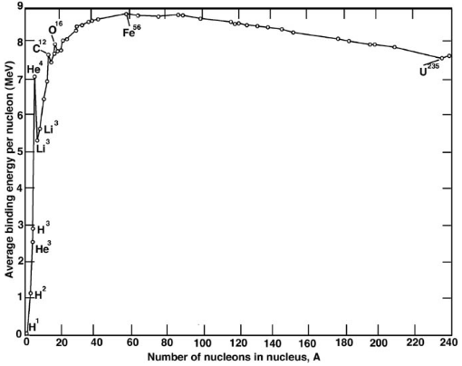
For low \(A\), \(E_B/A\) oscillates rapidly. It saturates near \(A=60\) and peaks at almost \(9\text{MeV}\) per nucleon, for \(^{56}Fe\). It drops slowly for large \(A\). For the majority of nuclei, \(E_B/A\simeq 8\text{MeV}\).
Size of the Nucleus
From scattering experiments we find that \[\boxed{R\simeq r_0A^{1/3};\;\;r_0\simeq1.2\;\text{fm}}\] hence \[V\propto R^2\propto A\]
Density of Matter in Nucleus
The Density of matter in the nucleus is \[\rho(A,Z)=\frac{m(A,Z)}{V}.\] It is approximately the same for all nuclei \((\rho\simeq 2.3\times 10^{17}\;\text{kg/m}^3)\).
Angular Momentum of the Nucleus
Angular moment is defined as \(\vb{L}=\vb{r}\times\vb{p}\). In quantum systems, there is another contribution to the overall angular momentum, intrinsic spin \(\vb{S}\)
- Both neutrons and protons have half-integer spin: \(S=\hbar/2\).
- Both \(\vb{L}\) and \(\vb{S}\) combine to give the system’s total angular momentum: \(\vb{J}=\vb{L}+\vb{S}\).
In QM we can measure simultaneously \(J^2\) and the projection of \(J\) on one axis. They both take only discrete values: \[\begin{array}{ll} J^2=j(j+1)\hbar^2, & j\in\mathbb{Z}^+\\ J_z=m_j\hbar, &m_j=-j,-j+1,\ldots j-1,j \end{array}\]
Nuclear Spin
The total angular momentum of a nucleus is often referred to as the nuclear spin. For a nucleus with
- \(A\) even and \(N,Z\) odd, \(j\) is integer.
- \(A\) odd, \(j\) is half integer.
- \(Z,N\) even, \(j=0\).
Nuclear Magnetic Dipole Moment
Magnetic dipole moment describes the distribution of electric currents in a system. In a nucleus, there is a magnet dipole moment associated with the nuclear spin. It is measured in terms of the nuclear magneton, \(\mu_n\): \[\mu_n=\frac{e\hbar}{2m_p}\] For \(A,Z\) even, \(\mu_n=0\).
Nuclear Stability
Nuclear stability depends on \(Z\) and \(N\). It is presented on a Zregre chart.
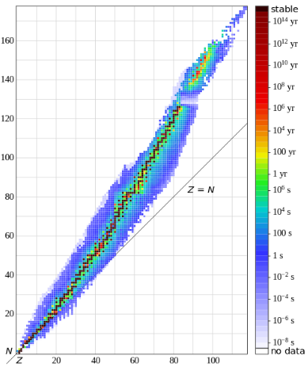
- Light stable nuclei tend to have \(N=Z\).
- Heavy stable nuclei have \(N\gt Z\).
- Decay occurs via emission of \(\alpha,\beta,\gamma\) particles.
Nuclear Force
Nuclei are composed of neutral and positively charged particles Electromagnetic repulsion between like charges must be overcome for nuclei to exist. It is a strong nuclear force. This force binds together the nucleons. Electrons are insensitive to it, and it does not depend on the charge of particles. It is 100 times stronger than the repulsive Coulomb force. t prefers to bind protons into pairs with opposite spins; neutrons are also preferably bound into pairs with opposite spins.
Strong Nuclear Potential
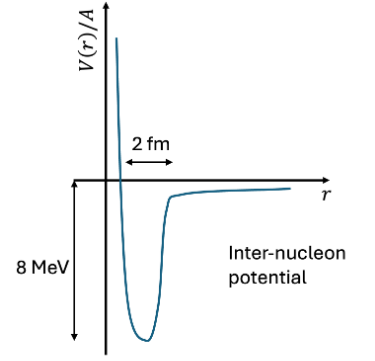
Strong nuclear force results in an inter-nucleon potential that is repulsive at short distances and attractive over the size of the nucleus. The potential tends to zero outside the nucleus.
Liquid Drop Model
We have the mass of the nucleus \[m(Z,A)=Zm_p+(A-Z)m_n-E_B/c^2.\] The liquid drop model predicts the value of \(E_B\) as the sum of several terms produced by different effects
- Volume term. The nuclear force is short range, therefore, each nucleon interacts only with the neighbours: \(a_vA\).
- Surface term. Nucleons at the surface have fewer nearest neighbours and are not as tightly bound: \(-a_sA^{2/3}\).
- Coulomb term. Protons repel each other: \(-a_c\frac{Z^2}{A^{1/3}}\).
So far we have \[E_B=a_vA-a_sA^{2/3}-a_c\frac{Z^2}{A^{1/3}}\] The model with just three terms is inadequate. It predicts that the nucleus with \(Z=0\) has the greatest binding energy. If this were the case, all the nuclei would contain only neutrons. The model needs to be corrected by considering other contributions
- Asymmetry term. The nucleus can be treated as a gas of free protons and neutrons that are confined to a small region space, the nuclear volume. Protons and neutrons are fermions, and therefore, any two protons or neutrons cannot be in the same quantum state: \(-a_a\frac{(A-2Z)^2}{A}\).
- Pairing term. It is found experimentally that two protons or two neutrons are always more strongly bound than one proton and one neutron \(+a_p\frac{\delta(A,Z)}{A^{1/2}}\).
Thus we can find the semi-empirical mass formula (SEMF) \[\boxed{m(Z,A)=Zm_p+(A-Z)m_n-E_B/c^2}\] where \[\boxed{E_B=a_vA-a_sA^{2/3}-a_c\frac{Z^2}{A^{1/3}}-a_a\frac{(A-2Z)^2}{A}+a_p\frac{\delta(A,Z)}{A^{1/2}}}\] the values of the parameters cannot be calculated and must be extracted from data: \[\begin{array}{|c|c|} \hline \textbf{Parameter} & \textbf{Value [MeV]}\\ \hline a_v & 15.8\\ a_s & 17.8\\ a_c & 0.714\\ a_a & 23.7\\ a_p & 12.0\\ \hline \end{array}\]
Nuclear Decays
Most nuclei are unstable, i.e., they spontaneously transform into other nuclei. This transformation is called radioactive or nuclear decay.
The total number of nucleons is always conserved.
Radioactive decay occurs if
- A lower energy state with the same number of nucleons exists.
- The combined mass of the decay produced in the final state is less than the mass of the initial state, i.e. \[m_i\gt\sum m_f\]
- Total energy, momentum, charge and \(A\) are conserved in nuclear decays.
- Energy released in a decay is denoted \(Q\) and referred to as the "Q-Value" \[Q=\Delta mc^2=(m_i-\Sigma m_f)c^2\]
- For \(Q\gt 0\) the reaction occurs spontaneously. For \(Q\lt0\) energy must be supplied.
\(\alpha\)-Decay
In this type of decay, a helium-4 nucleus is emitted: \[_Z^AX\to_{Z-2}^{A-2}Y+_2^4\text{He}\] The helium nucleus is known as an "\(\alpha\) particle". The energy released in the process and carried away by the products as kinetic energy. An alpha particle is very tightly bound and easy to form in the nucleus. Nuclei that decay via alpha emission have lifetimes in the range of \(10^{10}\) years to \(10^{-7}\) seconds.
QM Tunnelling
The potential energy of an \(\alpha\) particle depends on its position \(r\) relative to the centre of the nucleus.
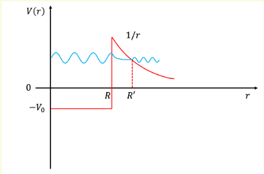
- \(r\lt R\): the \(\alpha\) experiences the strong nuclear force.
- \(r\gt R\): the \(\alpha\) experiences only the coulomb repulsive force.
The fact that \(\alpha\)-decay occurs indicates that \(E_\alpha\gt 0\) and it is this energy released in a decay. However \(E_\alpha\) is not greater than the Coulomb barrier as the nucleus with this \(A\) would not exist. Thus the particle escapes via QM tunnelling. The wave function falls exponentially inside the barrier region. The Coulomb part of the potential well is very steep. A small change in \(E_\alpha\) makes a large change in the thickness of the barrier \(\Delta r=R'-R\).
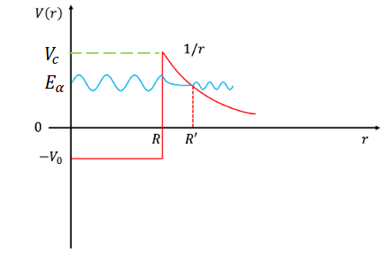
Probability for transmission \(P\) is \[P\simeq e^{-2k\Delta r}\] where \(k=\sqrt{2m(V_c-E_\alpha)}/\hbar\). We can solve the relevant equations to find the relationship between half life and \(E_\alpha\): \[\log(t_{1/2})=a(Z)+\frac{b}{\sqrt{E_\alpha}}\] where \(a\) is a parameter that depends on \(Z\) and \(b\) is a constant. This is the Geiger-Nuttall relation.
\(\beta\)-Decay
There are two types. \(\beta^-\) and \(\beta^+\). An electron or positron and a neutrino are emitted.
- \(\beta^-\)-decay with electron emission: \[^A_ZX\to_{Z+1}^AY+e^-+\bar{\nu}_e\]
- \(\beta^+\)-decay with positron emission: \[^A_ZX\to_{Z-1}^AY+e^++\nu_e\]
Stability of Nuclides
We can remember the SEMF,
- In \(\beta\)-decay, \(A\) is constant and \(Z\) changes by one unit.
- The dependence of \(m(Z,A)\) on \(Z\) is quadratic.
- For a given \(A\) there should be a minimum of \(m\).
- The nuclide with minimal \(m\) is stable against beta decay.
- For a given \(A\), for the most stable nuclide: \[\frac{\delta M(A,Z)}{\delta Z}\simeq 0\]
Q-Value of \(\beta\)-Decay
\[\begin{align} &\beta^-:\qquad Q=(m(Z,A)-m(Z+1,A)-m_e)c^2\\ &\beta^+:\qquad Q=(m(Z,A)-m(Z-1,A)-m_e)c^2 \end{align}\] It is more convenient to compute this using atomic masses \[M(Z,A)=m(Z,A)+Zm_e\] \[\begin{align} &\beta^-:\qquad Q=(M(Z,A)-M(Z+1,A))c^2\\ &\beta^+:\qquad Q=(M(Z,A)-M(Z-1,A)-2m_e)c^2 \end{align}\]
Electron Capture
For some atoms \[M(Z-1,A)\lt M(Z,A)\lt M(Z-1,A)+2m_e\]
- In this case \(\beta^+\)-decay is forbidden because \(Q\lt 0\).
- However, it is possible for such atoms that the nucleus captures an electron from the atomic shell and emits a neutrino \[e+_Z^AX\to\;^A_{Z-1}Y+\nu_e\]
- This is called electron capture, with \(Q=(M(Z,A)-M(Z-1,A))c^2\)
\(\gamma\)-Decay
After a nuclear decay or reaction, the daughter nuclide is often left in an 'excited state', i.e. the nucleons are not in the lowest energy state. The nucleons will 'de-excite' to the ground state with the emission of a photon \[^A_ZX^*\to^A_ZX+\gamma\] This is similar to atomic de-excitation of electrons, but at much higher photon energy and concerning the nucleons NOT the electrons. Sometimes more than one photon is emitted. This is known as a \(\gamma\) cascade.
- Higher energy states fairly long-lived (\(t_{1/2}\gt 100\text{ns}\)) are 'metastable' states called isomers.
- We denote excited states with stars \((*)\).
- In more detailed analysis of nuclei we can use \(m,n,p\) for the first second and third excited states respectively.
Activity
A large number of radioactive decays must be studied to infer the average properties. We can define the number of nuclei in a sample at time \(t\) as \(N(t)\). The activity also known as the decay rate, is the rate of change of \(N(t)\) with respect to \(t\) with a minus sign. It has units of becquerel \([\text{Bq}]\) which is 1 decay per second. \[\text{Activity}\equiv -\dv{N}{t}=\lambda N(t)\] where \(\lambda\) is the radioactive decay constant. Let the number of radioactive nuclei in a sample be \(N_0\) at \(t=0\). By solving the differential equation we find \[N(t)=N_0e^{-\lambda t}\]
Half-Life
The half life (\(t_{1/2}\)) of a radioactive nuclei is defined as the time taken for 50% of the sample to decay. Hence \[\lambda=\frac{\ln(2)}{t_{1/2}}\] the mean lifetime is defined as \(\tau=1/\lambda=t_{1/2}/\ln(2)\).
Decay Chains
Some isotopes follow a sequence of radioactive decays until a stable isotope is reached. The sequence of decays is often referred to as a decay chain.
- The original nucleus in the decay chain referred to as the parent nucleus.
- The decay product of the parent nucleus is referred to as the daughter nucleus.
Secular Equilibrium
When a decay chain has a member than lives for a relatively long time in comparison to other nuclei, all other nuclei below said member can only decay as fast as the nucleus above it in the chain. Thus the nuclei are in secular equilibrium as the nuclei below are roughly constant w.r.t time. E.g.
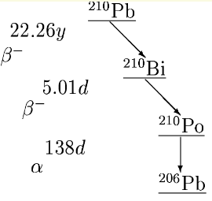
Compared with the other isotopes in the chain, lead-210 is longer-lived. In this case, the number of lead-210 in a given sample will barely change during a small time interval.
Branching Fraction
For some nuclides, several different decays are possible.
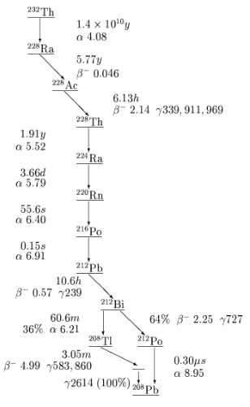
The branching fraction is defined as the ratio of the probability of decay by a given decay mode to the probability of decay by any mode. For example in the figure above the branching fraction of thorium-232 to thallium-208 is 36%. (From the split at bismuth)
Shell Model
Magic Numbers: Stable Nuclei
The most stable nuclei are those with the highest binding energy per nucleon. Binding energy as predicted by the SEMF, is sometimes in significant disagreement with measured energies.
- The disagreement is observed for nuclei with \(Z\;\text{and/or}\;N=2,8,20,28,50,82,126\). For such nuclei, the binding energy per nucleon is larger than expected. Hence the numbers above are called magic numbers.
- Nuclei with a magic number of protons and neutron have exceptionally high binding energy - these nuclei are called doubly magic nuclei.
- Nuclei with magic numbers have more isotopes and isotones.
- For magic \(Z\), they have a higher first excited state and greater natural abundance.
The presence of magic numbers cannot be explained via the liquid drop model or the SEMF. We use the shell model to explain them. The nuclear shell model only involves nucleons within the nucleus. There is no involvement from electrons.
Basic Assumptions
- A single nucleon moves in a nuclear potential that represents the average effect of interactions with other nucleons in the nucleus.
- The potential varies smoothly
- As nucleons are bound, the potential is a potential well.
- A nucleon move in an orbit of a single particle in the well.
- The nucleons obey Pauli exclusion principle.
Saxon-Woods Potential
The nuclear potential can be described via a "Saxon-Woods" potential \[V(r)\sim\frac{-V_0}{1+e^{(r-R)/d}}\]
- \(V_0\) is the depth of the potential (\(\sim 50\text{MeV}\)).
- \(d\) is the surface thickness of the nucleus.
- \(R\) is the nuclear radius, \(R=r_0A^{1/3}\)
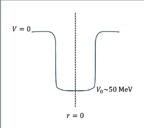
Quantum State of Nucleons
According to the Pauli exclusion principle, two fermions of the same type cannot occupy the same quantum state. This applies separately to protons and neutrons. The quantum state of the nucleon is described by:
- Principle quantum number (\(n=1,2,3,\ldots\))
- Orbital quantum number (\(l=0,1,2,\ldots\) which are denoted as \(s,p,d,f,\ldots\))
- \(\vb{L}\) and \(\vb{S}\) of the nucleon, which are combined as \(\vb{J}=\vb{L}+\vb{S}\).
- The observable quantum numbers are \(\vb{J}^2=j(j+1)\hbar^2\) and \(J_z=m_j\hbar\), where \(m_j=-j,-j+1,\ldots, j\)
- The QM rules for adding angular momentum and spin determine the possible values of \(j\): \(l\pm\frac{1}{2}\).
- The notation of the quantum state of the nucleon is \[(n)(l)_{(j)}\] e.g. the state \(2p_{3/2}\) has \(n=2,l=1,j=3/2\).
Energy Levels of the Nucleon
Energy levels of the nucleon with different quantum numbers are obtained from the solution of the Schrodinger equation for the Saxon-Woods potential.
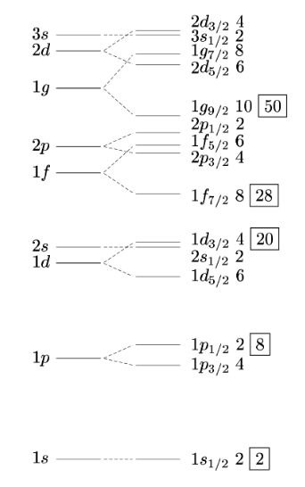
The different states are grouped into shells
- The difference of energy within the shell is small.
- The difference of energy between the shells is large
The nuclei with the filled shells have 2, 8, 20, 28, 50 nucleons. This is a perfect match to the experimentally observed magic numbers!
Nuclear Fission and Fusion
Some nuclei are naturally radioactive and thus unstable. Other nuclei can transmute into other elements through nuclear reactions. Nuclear reactions can be initiated in any nuclide (stable or not) by bombarding a nucleus with other nuclei or particles such as \(\alpha,\gamma,n,p\), etc. E.g. \[^7_3\text{Li}+p\to^7_4\text{Be}+n\] Fusion of two nuclei can occur if the sum of their masses is greater than the mass of the resulting nuclei. E.g. \[^2\text{H}+^3\text{H}\to^4\text{He}+n+17.6\text{MeV}\] This can happen for any nuclei below \(^{56}\text{Fe}\). Fission causes a single nucleus to split into two or more smaller nuclei. This can happen for any nuclei above \(^{56}\text{Fe}\).
Cross-Section
A quantitative measure of the probability that the nuclear reaction will occur is called a cross-section \(\sigma\). The cross section can be interpreted as the effective area of the nucleus presented to the beam for which a particular reaction can be expected to occur.
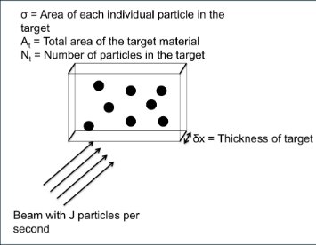
We find that for a number of particles hitting a target \(J\), the number of reactions per second is \[W=j\frac{\sigma N_t}{A_t}\] where \(N_t\) is the number of target nuclei and \(A_t\) is the total area of the target. The number of nuclei per unit volume is \(n=\frac{N_t}{A_t\delta x}\) and therefore \[\sigma=\frac{W}{Jn\;\delta x}\] The unit of the cross section is barn \(1\;\text{barn [b]}=10^{-28}\;\text{m}^2\). For a given beam of particles, several reactions can occur. Each reaction \(i\) has a partial cross section \(\sigma_i\) and therefore there is a total cross section \(\sigma_\text{tot}=\sum_i\sigma_i\).
Fission
Some very heavy nuclei can undergo spontaneous fission. This is the process where a parent nucleus breaks into two daughter nuclei without any external input. This is only possible if energy is released in the process. Fission can be induced, usually by bombardment with neutrons (neutron activation) e.g. in nuclear reactors.
Fission Barrier
To undergo spontaneous fission, the (daughter) nuclei should tunnel through potential barrier like in the \(\alpha\)-decay. However the fragments are very heavy so the tunnelling probability is small. The height of the top of the fission barrier above the ground state energy of the nucleus is called activation energy. Activation energy decreases as \(A\) increases, and for very heavy nuclei, the spontaneous fission has a reasonably high probability.
Neutron-Induced Fission
Neutrons are neutral particles, and they are not repelled by the positively charged nucleus, therefore, low-energy neutrons can be easily absorbed by nuclei, often resulting in an excited state, which subsequently decays. Neutron-induced fission, commonly referred to as fission, can occur when a nucleus captures a low-energy neutron and receives sufficient energy to overcome the fission barrier. For example \[^{235}_{92}\text{U}+n\to\text{X}^*+\text{Y}^*\to\text{X}+\text{Y}+kn\] where \(k\) represents the number of neutrons released in the reaction. A chain reaction can happen since neutrons released can trigger other bombardment. There is the following condition:
- \(k\lt 1\): Sub-critical state.
- \(k=1\): Critical state.
- \(k\gt 1\): Supercritical state.
Nuclear Reactor
The nuclear reactor consists of the following major parts:
- Fuel - usually either natural or enriched uranium.
- Moderators - Slow down fast neutrons via elastic collisions.
- Control rods - Control the number of neutrons available for fission.
- Cooling system - The reactor needs to be held at a reasonable temperature.
Fusion
Nuclear fusion occurs when it is energetically favourable for light nuclei to fuse and release energy. For fusion to occur the Coulomb barrier must be overcome. The most simple example is the combination of two protons: \[p+p\to d+e^++\nu_e+0.42\;\text{MeV}\] For two protons, the Coulomb energy is around 1.2 MeV. Released energy is not sufficient to overcome the Coulomb barrier. However, this is the main fusion process within the Sun! It MUST therefore be possible! The ways to overcome the Coulomb barrier:
- Accelerate particles to slam them together.
- Increase density.
- Increase temperature.
- Combine several of the above and quantum tunnelling.
The Standard Model
Units of particle Physics
Main properties of particles: mass \(m\), charge \(q\), spin \(s\).
- For an electron, assuming SI, we have \[\begin{align}&m(e)=9.109\times 10^{-31}\;\text{kg}\\&q(e)=-1.602\times 10^{-19}C\\&s_z=\pm\hbar/2=\pm1/2\times1.055\times10^{-31}\;\text{Js}\end{align}\]
- Using SI is not convenient, so we use special units s.t. \[\begin{align}&m(e)=0.511\;\text{MeV/c}^2\\&q(e)=-1\\&s_z(e)=\pm1/2\end{align}\]
- This implies that \(\hbar=1\), and we often set \(c=1\) too.
Natural Units
\(\hbar=1\) implies that \[\begin{align} &[\text{energy}]\times[\text{time}]=1\\ &[\text{momentum}]\times[\text{distance}]=1 \end{align}\] We can recall the relativistic energy-momentum relationship: \[E^2=p^2c^2+(mc^2)^2\] Making the choice \(\hbar=1,\;c=1\) implies:
- Energy, momentum and mass are measured in the same units.
- Time and distance are both measured in inverse energy.
- Angular momentum is dimensionless.
Fundamental Particles
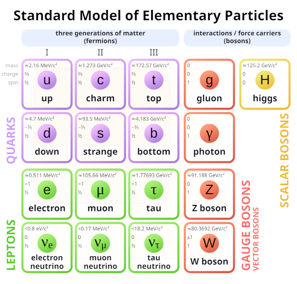
Matter is made up of fermions which are:
- Six quarks,
- Six leptons
Forces are carried via bosons:
- Four gauge bosons which carry strong force, EM force, and control weak interactions
- Higgs boson responsible for masses
Each particle has a corresponding antiparticle.
Fundamental Interactions
All known interactions between fundamental particles are produced by the strong, weak, and electromagnetic forces. (Gravity is insignificant at the energy scales of experimental particle physics and is not included in the model)
Particles of Matter
Quarks and leptons are fundamental particles of matter. All known matter in the Universe is formed from quarks and leptons.
- Quarks and leptons are fermions; their spin is 1/2.
- The charge of quarks is \(+2e/3\) (up) \(-e/3\) (down)
- The charge of leptons is \(-e\) (charged leptons) \(0\) (neutrino)
- \(e=1.60\times10^{-19}\text{C}\) is the absolute value of the charge of the electron.
The main difference between quarks and leptons is that quarks participate in strong, weak and electromagnetic interactions. Charged leptons participate in weak and electromagnetic interactions. Neutrinos participate only in weak interactions (because their charge is zero). Neutrinos are massless in the standard model, but we know they have masses, just not their values. All quarks have an additional quantum number called colour charge. It can be in one of three states: red, green and blue.
Generations of Matter
The particles of matter are grouped in three generations. Each generation contains two quarks and two leptons. The first generation contains up and down quarks, electron and electron neutrino. Between generations, the similar particles differ by their mass, but their interactions are the same. Similar particles in the generations are successively heavier and less stable.
Anti-particles
All fermions have anti-particles. They are denoted with a bar above the symbol of the particle. Anti-particles have identical mass, spin, energy, momentum, etc, but opposite charge. When a particle meets its corresponding antiparticle, they annihilate to release the energy contained in their masses. The inverse process (creation of matter) is also possible. Respectively: \[\begin{align} &e^++e^-\to\gamma+\gamma\\ &\gamma+\gamma\to e^+=e^- \end{align}\]
Hadrons
Quarks cannot exist as free particles. They must be confined within composite particles called hadrons. They are classified into
- Baryons - with half integer spin, and
- Mesons - with integer spin.
Baryons consist of three quarks, whereas mesons consist of a quark and anti-quark. Each hadron has an anti-hadron such as \(uud\) and \(\bar{u}\bar{u}\bar{d}\).
Fundamental Forces
- Classical physics: Interaction at a distance is described in terms of a potential or field due to one particle acting on another.
- Quantum theory: interaction is viewed as an exchange of specific quanta (i.e. bosons) associated with the particular type of interaction.
Quarks and leptons interact via one of four fundamental forces. Interaction is mediated by the field quanta, which manifest as gauge bosons. The four gauge bosons have spin 1. The Higgs boson has spin 0.
Exchange of Gauge Bosons
In the exchange process, the relation between the energy and momentum of the gauge boson is violated.
- For a free particle \(E^2=p^2c^2+(mc^2)^2\).
- In the exchange process \(q^2=E^2-p^2c^2\neq(mc^2)^2\).
The exchange boson is virtual, and it is referred to as being "off mass shell". Violation of energy-mass relation is possible during a short period of time due to the uncertainty principle \(\Delta E\Delta t\geq\hbar/2\). This allows us to "borrow" an amount of energy \(\Delta E=Mc^2\) for a time \(\Delta t\). The maximum distance travelled by the exchange particle is \[\Delta x=c\Delta t\sim\frac{\hbar c}{Mc^2}\] (Electromagnetic interaction is long-range because the mass of the photon is zero)
Feynman Diagrams
They are a pictorial representation of an interaction between fundamental particles. Special Feynman rules associated with Feynman diagrams allow calculation of the probability of any process in particle physics.
If you cannot draw a valid Feynman diagram connecting an initial state to a final state, then the reaction cannot happen.
Conventions
Feynman diagram shows the evolution of a process in time (but not in space) (on the \(x\)-axis):
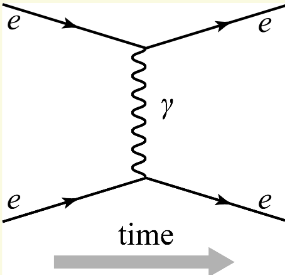
The \(y\)-axis is not related to the position of particles or the distance between them. For example, this diagram shows the electromagnetic scattering of two electrons. Initially, both electrons are on the left side of the diagram; this is called the initial state. They move along the full lines and interact by exchanging the photon. As a result of interaction, the properties of the electrons (e.g., momentum, energy, etc.) change. The break in the electron lines reflects this. The diagram does not specify which properties change or how much. After the interaction, the particles continue to move undisturbed along their lines and finish on the right side of the diagram, which is called the final state.
Interaction Vertex
The diagram is constructed from several basic elements called vertex. The vertex of the EM interaction consists of one full broken line with an arrow corresponding to a fermion and one "zig-zag" line corresponding to a photon.
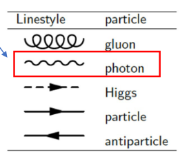
A Feynman diagram is ‘topological’. It can be drawn in slightly different ways, and it still means the same thing. However, it is best practice to draw the diagram in the most simple form to avoid confusion Feynman diagrams can be rotated to change what is in the initial and final states. The result is a different process. We can rotate not the diagram but only one of the fermion lines and obtain a diagram describing a different process.
Virtual Particles
The closed lines on the diagrams correspond to virtual particles. The uncertainty principle allows the virtual particles to exist for the time \(\Delta t\sim\hbar/E\). Both fermions and bosons can be virtual.
Hadron Involvement
Hadrons are composed of several quarks and/or anti-quarks. Even though some of the quarks of the hadron do not participate in the interaction, they are also shown on a diagram. Such quarks and/or anti-quarks are called spectators. Initial and final state of the processes are hadrons, not quarks. Initial and final hadrons must be specified. 
Interactions
EM Interactions
Only one type of vertex exists for the electromagnetic interaction of fermions.
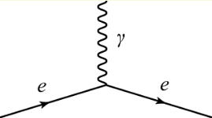
- A particle cannot become an antiparticle from an EM interaction.
- Only one photon in the vertex.
- The flavour of the particle does not change \(\implies\) charge is conserved in the EM interaction.
Strong Interaction
The colour state of quarks change in a strong interaction. Since colour charge is conserved this implies that the gluon also has a colour state:
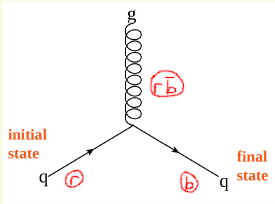
A gluon can therefore interact with itself. Thus the strong interaction has two important properties
- Asymptotic freedom
- Confinement
1. Asymptotic Freedom
The strong force strength decreases with the decrease of distance. I.e. as \(r\to0\), the force becomes very small. Thus a group of quarks very close together are free!
2. Confinement
The strong force does not decrease with distance, therefore the energy to completely separate two particles is infinite. Thus colour objects cannot be free, they combine into colourless ("white") objects.
Strong Interaction of Hadrons
They do not interact when the distance between them is large, but when they are close together the quarks within the hadrons can react with the quarks in other hadrons. This is why nucleons are bound to each other in the nucleus.
White Objects
Two combinations of colour particles give colourless (white) objects:
- Mesons: e.g. \(u(r)+\bar{d}(\bar{r})\)
- Baryons: e.g. \(p=u(r)+u(g)+d(b)\)
Thus only mesons and baryons can exist as free particles. Leptons, and all bosons except the gluon do not have the colour charge; they are also treated as white particles.
Weak Interaction
The weak interaction is mediated by \(W^\pm\) and \(Z\) bosons. Both of these bosons are massive particles \[M(W)=80\text{MeV},\qquad M(Z)=91\text{GeV}.\] The charges of these particles are \[q(W)=\pm1,\qquad q(Z)=0.\] The charge is conserved in weak interactions, therefore the flavour of the fermion in the interaction with a \(W\) boson changes.
- A charged lepton is transformed to a neutrino (and vice versa).
- Up type quarks are transformed into down type quarks (and vice versa).
Change of Flavour (Type)
- Any up-type quark can transform into any down-type quark, e.g., \[u\to W^+d\quad\text{or}\quad b\to W^-d\]
- However, a charged lepton is transformed ONLY to the neutrino of the same generation \[e\to W^-\nu_e\quad\text{or}\quad\nu_\tau\to W^+\tau\]
- Therefore, the number of leptons from each generation is conserved in weak interactions. We can introduce the individual lepton number \(L_e,L_\mu,L_\tau\).
For example
- Each electron or electron neutrino is assigned \(L_e=+1\)
- Each positron of electron anti-neutrino is assigned \(L_e=-1\)
- Any other particle has \(L_e=0\)
- \(L_\mu,L_\tau\) are defined similarly.
Lepton Number and Baryon Number
All known interactions do not transform leptons to quarks and vice versa. To quantify this statement, the lepton number \(L\) and baryon number \(B\) are introduced.
- \(L=L_e+L_\mu+L_\tau\). It is conserved in W.
- Each quark is given \(B=+1/3\) and each anti-quark is given \(B=-1/3\).
So all known interactions conserve \(L\) and \(B\). (Separately)
Interaction with \(Z\) Boson
The \(Z\) boson interacts with any fermion. (Including neutrinos, which is their only interaction.)
- Particles cannot become antiparticles
- Only one \(Z\) in each vertex
- The flavour of the particle does not change \(\implies\) \(q\) is conserved.
Range of the Weak Interaction
Since \(W\) and \(Z\) are massive, they are virtual particles and exist for a very short time: \[\Delta t\sim\frac{\hbar}{\Delta E}\to\Delta x=c\Delta t\sim\frac{c\hbar}{Mc^2}\sim2.4\times 20^{-18}\text{m}\] this is a very short range. E.g.
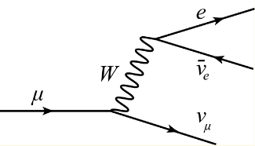
Conserved Quantities
The fundamental interactions conserve some quantities and do not conserve others All interactions in the standard model conserve
- Four-momentum (energy and momentum)
- Total angular momentum
- Electric charge
- Colour charge
- Individual + total lepton number
- Baryon number
On the contrary, the flavour is conserved in EM and strong interactions, but not in weak interactions.
Conservation of Four-momentum
Conservation of four-momentum implies that the mass of decaying particle is always greater than the sum of the masses of the decay products \[M_i\gt\sum_fM_f.\] In the rest frame of the decaying particle, the initial energy is equal to the mass of the particle, and the final energy is greater than the sum of the masses of the decay products. This is why the decay \(n\to p+e+\bar{\nu}_e\) is allowed, but the decay \(p\to n+\bar{e}+\nu_e\) is not permitted. Note that this latter can happen when the proton is in the nucleus, as this is \(\beta^+\) decay. It just cant happen when the proton is a free particle. In the case of the neutron we must consider the mass of the nucleus before and after the decay.
Particle Decay and Production
Many particles, both composite (hadrons) and fundamental (fermions and bosons) cease to exist after some time after their creation and produce several other particles. This process is called decay. E.g. \[\mu\to e\bar{\nu}_e\nu_\mu\]
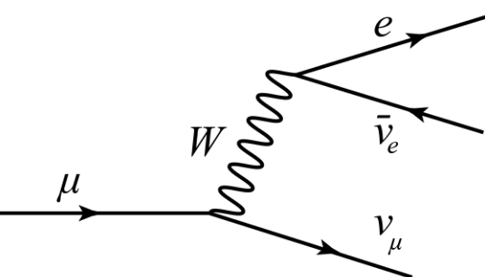
- Particles decay spontaneously and independently of each other.
- The number of particles that have decayed \(\dd{N}\) in an interval \(\dd{t}\) must be proportional to the number of particles present at the start of the interval, \(N(t)\). \[\frac{\dd{N}}{dt}=-\Gamma N\]
- \(\Gamma\) is a positive constant called the natural decay width.
- Like in radioactive decay, the solution to the equation is \[N(t)=N_0e^{-\Gamma t}\]
- The quantity \(\tau=1/\Gamma\) is called the mean lifetime.
Interactions
All decays are the result of interaction.
- Strong decay are mediated by gluons. Only hadrons strongly decay. \(\tau\sim 10^{-23}\text{s}\)
- Electromagnetic decays are mediated by photons. Only hadrons electromagnetically decay. \(\tau\sim 10^{-20}\text{s}\)
- Weak decays are mediated by \(W^\pm\) and \(Z\) bosons. Both hadrons, fundamental fermions, \(W^\pm\) and \(Z\) bosons weakly decay. From \(\tau\sim 10^{-6}\;\text{to}\;10^{-12}\text{s}\) for light particles and up to \(10^{-24}\text{s}\) for heavy particles.
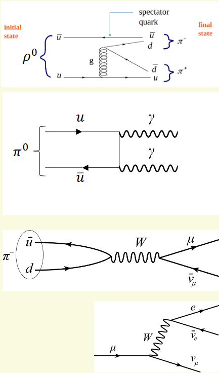
Mean lifetime above \(\sim10^{-13}\text{s}\) can be experimentally measured. For particles with m.l. below that, natural width is used instead. This has units of \(\text{MeV or GeV}\).
Branching Fraction
Usually a particle can decay into different final states. decays to different final states are called decay modes. For example, the following decays are possible \[\pi^-\to\mu\bar{\nu}_\mu\quad\text{or}\quad\pi^-\to e\bar{\nu}_e\] The probability of decay to different decay modes depends on the property of interaction. The branching fraction is defined as the ratio of the probability of decay by a given decay mode to the probability of decay by any mode.
Natural Width
The observed mass of a particle with a very short lifetime is subject to the uncertainty principle \[\Delta E\Delta t\gtrsim\frac{\hbar}{2}\] The energy of a particle at rest is its mass. Thus the uncertainty is the mass is \[\Delta M\gtrsim\frac{\Gamma}{2}\]
Centre of Mass Energy
The centre of mass energy \(\sqrt{s}\) is defined as \[\sqrt{s}=\sqrt{(E_1+E_2)^2-(\vb{P}_1+\vb{P}_2)^2}=\sqrt{(p_1+p_2)^2}\] This expression is Lorentz-invariant, i.e., it is the same in any frame.
Dominant Interaction
In many cases, several interactions can contribute to the production of the particles.
- In general if a process is mediated by the EM interaction, it can also be mediated by the \(Z\) boson. (The reverse is not true)
- Any strong interaction of quarks can be mediated by the photon or \(Z\) boson.
Probability of a process (both decay and production) is determined by the sum of contributions of all possible interactions. Often, only one type of interaction gives the main contribution to the probability.
- The strong interaction if possible always dominates over EM and weak interactions.
- At low energies \(\sqrt{s}\ll M(Z)\), EM dominates over weak interactions with the \(Z\) boson.
- At high energies \(\sqrt{s}\gtrsim M(Z)\) then the weak interaction becomes dominant.
Transformation of Flavours
Coupling Constant
The probability of each process in particle physics depends on a coupling constant of interaction. It is a numerical quantity describing the strength of interaction. It depends on the energy of the interaction. For EM interactions, it also depends on the charge of the particle. \(Qg_\text{em}\) where \(g_\text{em}=\sqrt{4\pi/137}\). Probability of each process (decay or collision) is proportional to the square of the product of the constants in all vertices of the Feynman diagram. The probability of the production of the \(u\bar{u}\) pair in the \(\bar{e}e\) interaction is: \[P(e\bar{e}\to u\bar{u})\propto(Q_eQ_ug^2_\text{em})^2\]
Flavour Universality of Weak Interaction
Weak interaction with \(W\) boson changes the flavour of fermions. An important assumption of the Standard Model is that the strength of interaction of any fermion with \(W\) boson (i.e. the coupling constant) should be the same. This assumption is called the flavour universality of weak interaction. This assumption works well in weak interactions of leptons: \[g_W^e=g_W^\mu=g_W^\tau=g_W\approx0.641\] But differs from that of quarks \[g_W^{d\to u}=0.975g_W\qquad\quad g_W^{s\to u}=0.223g_W\]
Cabibbo's Theory
Flavour universality of weak interactions can be restored if we assume that the down-type quarks participating in the weak interactions are not d and s, but their combination: \[\begin{align} &d'=\cos\theta_c\;d+\sin\theta_c\;s\\ &s'=-\sin\theta_c\;d+\cos\theta_c\;s \end{align}\] where \(\theta_c=12.9^\circ\) is the Cabibbo angle.
Coupling Constant for \(W\)
d' and s' participate in the weak interactions. They are called weak eigenstates. d and s are called mass eigenstates; they have the mass and form hadrons. Only the interaction of \(W\) with the up and down quarks of the same family is possible. The coupling constant in the obeying interactions is the same as in the case with leptons.
Quark Mixing Matrix
We can rewrite the relationship between the weak (d',s') and mass (d,s) eigenstates in a matrix form: \[\pmatrix{d'\\s'}=\pmatrix{V_{ud}&V_{us}\\V_{cd}&V_{cs}}\pmatrix{d\\s}=\pmatrix{\cos\theta_c&\sin\theta_c\\-\sin\theta_c&\cos\theta_c}\pmatrix{d\\s}\] ...this is the mixing matrix of two quark families. This can be extended to include the third family: \[\pmatrix{d'\\s'\\b'}=\pmatrix{V_{ud}&V_{us}&V_{ub}\\V_{cd}&V_{cs}&V_{cb}\\V_{td}&V_{ts}&V_{tb}}\pmatrix{d\\s\\b}\]
Probability of Quark Transitions
The CKM parameters \(V_{xx}\) contribute to the probability of processes with quarks. I.e. \[P(d\to ue\bar{\nu}_e)\propto\abs{V_{ud}}^2\] If the process involves several transitions between quarks, the total probability is proportional to the square of the product of the corresponding CKM parameters: \[P(b\to c\bar{u}s)\propto(g_W^2V_{cb}V_{us})^2\]